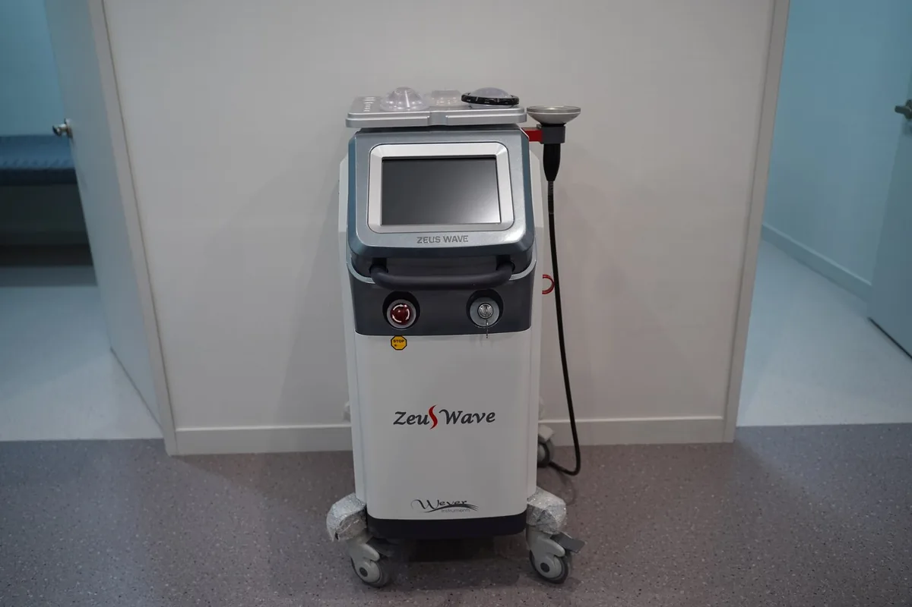

안양도수치료와 체외충격파·물리치료·운동치료를 함께 계획하는 이유

통증을 줄이는 치료와 재발을 막는 운동은 역할이 다릅니다. 체외충격파·냉각·전기 치료 같은 물리치료와 도수치료, 집에서 하는 운동을 어떻게 조합하는지 정리했습니다.
역할이 다른 치료를 나누어 봅니다
체외충격파(ESWT)는 힘줄·근막 부착부의 만성 통증에, 냉각·온열·전기(간섭파·경피신경자극)·초음파 치료는 통증과 부종 조절에 쓰입니다. 도수치료는 관절의 움직임과 근육 긴장을 손으로 다루고, 운동치료는 근력과 유연성을 회복해 재발을 막습니다. 공개 자료에 따르면 시대병원 물리치료실에는 집중형·방사형 체외충격파와 냉각치료기, 전기·초음파·레이저 치료기가 안내되어 있습니다.
순서와 강도는 상태에 따라
급성기에는 통증·부종 조절이 우선이고, 통증이 줄면 가동 범위 회복과 근력 운동의 비중을 늘립니다. 교통사고 후나 수술 후 재활은 회복 단계에 따라 강도와 방법이 달라지므로 담당 의료진의 일정에 맞춰 진행하며, 통증이 점점 심해지거나 저림·힘 빠짐이 새로 생기면 중단하고 평가받습니다.
집에서 하는 운동이 결과를 좌우합니다
병원 치료는 주 몇 회지만 생활은 매일입니다. 안내받은 스트레칭·근력 운동을 꾸준히 하고, 오래 앉기·허리 굽혀 들기 같은 피할 동작을 조정하는 것이 재발에 큰 영향을 줍니다. 운동 중 통증이 늘면 강도를 낮추고 다음 진료 때 알려 주세요.
상담 전 확인할 내용
- 지금 받는 치료의 목적(통증 조절·기능 회복·재발 예방)
- 집에서 할 운동과 피할 동작, 빈도
- 통증이 다시 늘었을 때 연락할 기준
위험과 주의사항
치료 뒤 일시적인 통증·근육통·멍이 생길 수 있습니다. 골절·골다공증·염증·불안정성이 있는 상태에서 부적절하게 힘을 가하면 손상이 생길 수 있어 진찰과 처방이 선행되어야 합니다. 치료 중·후 저림이나 힘 빠짐이 새로 생기면 중단하고 진료받으세요.
본 글은 진료 준비를 위한 일반 정보입니다. 진단과 치료 방법, 수술 필요 여부와 회복 기간은 의료진의 진찰과 검사를 통해 확인하세요.
안양도수치료 치료 안내와 주의사항 더 보기 ↗카테고리 도수치료·재활